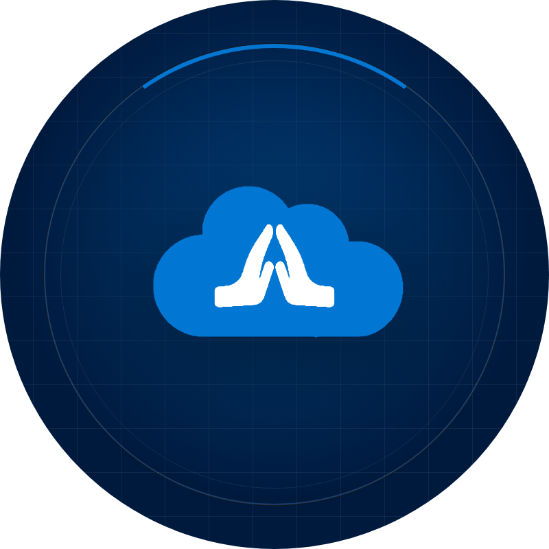
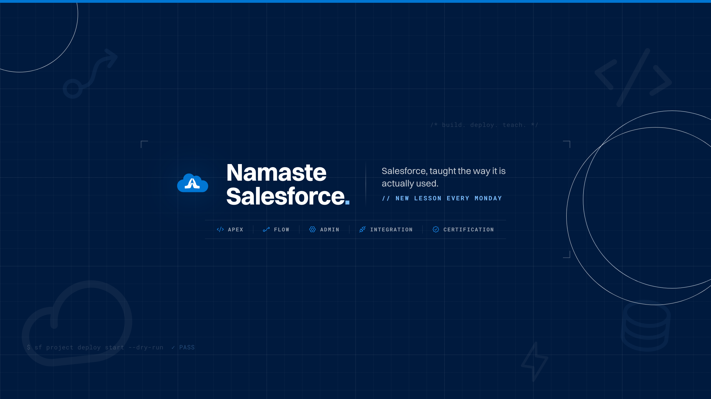
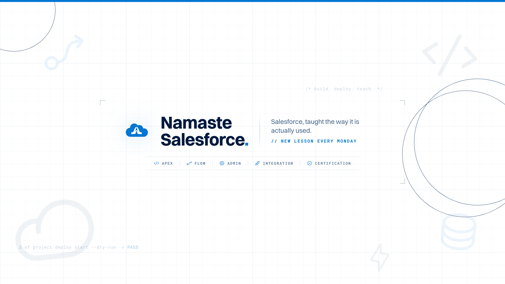

98 · channel01 Banner, dark — assets/social/youtube/banner-dark.png · 2560 × 1440

02 Banner, light — banner-light.png · same geometry, re-inked

03 Profile photo & watermark — avatar.png 800 × 800 · watermark.png 150 × 150

98 · channelThese are renders, not sources. The sources are the HTML artboards in brand-content-creation/youtube/export/ — 1:1 pixel pages styled with the system's own tokens, glyphs and fonts. Change the tagline or the topic strip there and re-render with the headless-Chrome command in each file's header (or export/README.md); never edit the PNGs. The light banner is derived from the dark one by palette substitution, so the two can never drift in geometry.